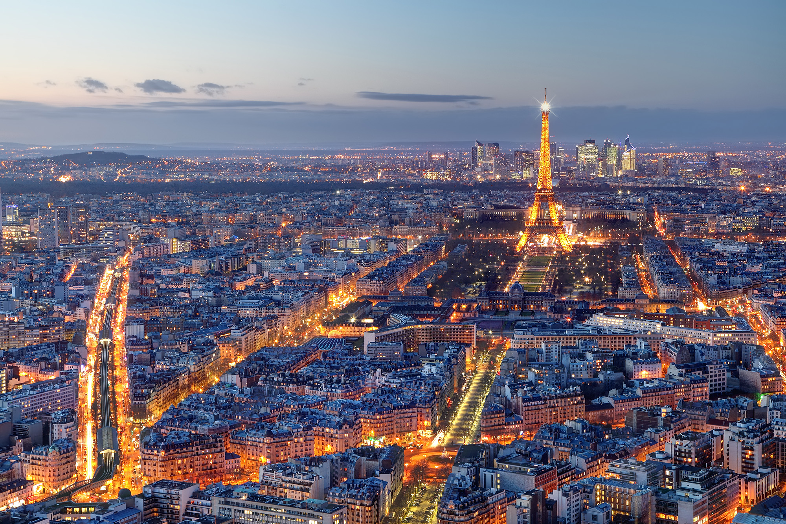
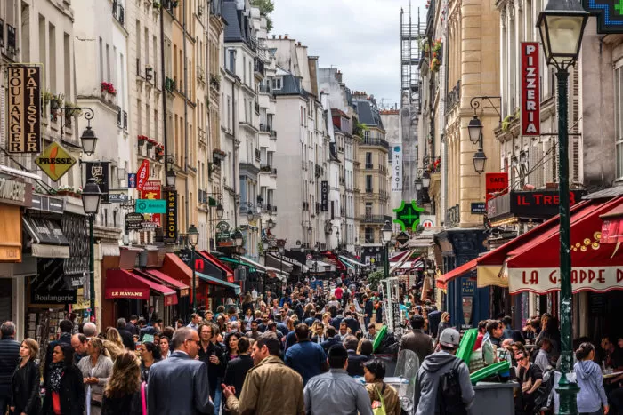

Paris, além de ser a capital, é a cidade mais populosa da França, reunindo seus mais de dois milhões de parisienses, no continente europeu. No século 17, Paris era um dos principais centros de finanças, comércio, moda, ciência e artes da Europa, e hoje mantém essa posição.
Conhecido como "Lutèce" nos tempos antigos, Paris foi conquistada por César em 52 aC e existia como um centro regional sob os romanos, no início da Idade Média. Em 987, Hugh Capet, Conde de Paris, tornou-se rei da França, e sob seus sucessores, a posição da cidade como a capital da nação se estabeleceu. Muitas vezes caracterizados como espirituosos e rebeldes, o povo de Paris primeiro se declarou uma comuna independente sob a liderança de Etienne Marcel (1355-1358). O assalto da Bastilha em 1789 foi o primeiro de uma série de ações-chave do povo parisiense durante a Revolução Francesa. Paris também desempenhou um papel importante nas revoluções de 1830 e 1848. Em 1871, durante a guerra franco-prussiana, a cidade foi sitiada por quatro meses até a França se render. Depois que as tropas prussianas se retiraram, os radicais franceses estabeleceram brevemente a Comuna de Paris. Durante a Primeira Guerra Mundial, os alemães foram impedidos de chegar a Paris, mas ocuparam a cidade durante a Segunda Guerra Mundial.
 